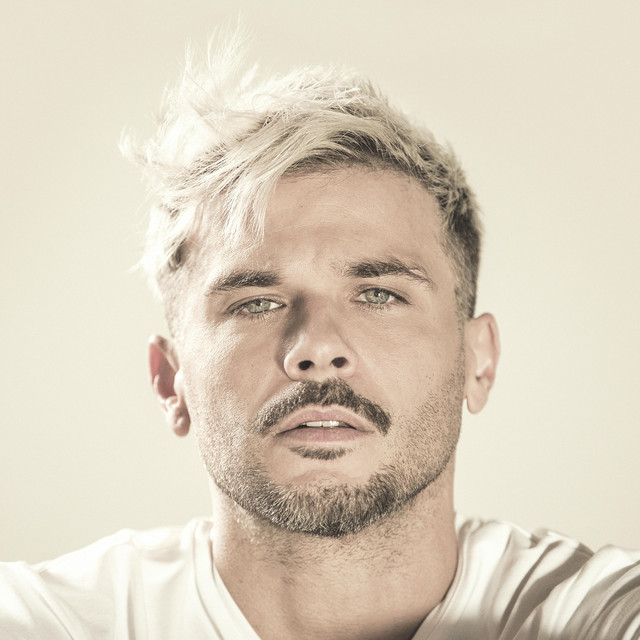

14,180,791 Monthly Listeners

Pedro Capo
About Artist
The grandson of Puerto Rican legend Bobby Capó, Pedro Capó is a Latin pop singer/songwriter who initially rose to fame in the rock en español band Marka Registrada during the late '90s prior to embarking on a solo career the following decade. Born on November 14, 1980 in San Juan, Puerto Rico, he comes from a musical family. His grandfather, Bobby Capó, was an internationally renowned singer/songwriter who ranks among Puerto Rico's greatest musical legends of all time. In addition, his father, also named Bobby Capó, was a popular singer of trova and salsa music. The third generation of Capós to find success in the popular music industry, Pedro initially sang and played guitar in Marka Registrada, who made their full-length album debut with Marka Registrada (1995), followed by 400 + 100 (1998). The latter album spawned Marka Registrada's best-known hit single, "Solo Pensando." While the band carried on for years afterward, Capó parted ways and moved to New York City, where he pursued a career in musical theater, appearing in productions such as The Sweet Spot and Azúcar! Celia: The Life and Music of Celia Cruz. He also embarked on a solo recording career. His debut album, Fuego y Amor (2005), was released on the independent label Racy Music. It was subsequently re-released on Sony Music in 2007 with an alternate cover and track listing. Meanwhile, Capó resumed his acting career, appearing in the films Shut Up and Do It! (2007) and Paraiso Travel (2008). In 2009 he re-emerged as a Latin pop artist, duetting with Thalía on her hit single "Estoy Enamorado." This set the stage for Capó's second album, Pedro Capó (2010). The promotional singles "Vamos a Huir," a Spanish-language interpretation of a Gilberto Gil favorite, and "Un Poquito Más" were issued prior to the album's release, while "Estoy Enamorado" was still garnering airplay. The follow-up singles, "Si Tú Me Lo Pides" and "Un Minuto," proved more successful. The former, co-written by Puerto Rican critical darling Kany García, peaked at number 22 on the Latin Pop Airplay chart, whereas the latter reached the Top Ten. The album peaked at 58 on the Top Latin Albums chart. Touring intensely, Capó would not record again for three years. In 2013, his pre-release single, "#FiebreDeAmor," reached 43 at Hot Latin Songs, while the ensuing album, Aquila, issued in 2014 reached number three at Top Latin Albums. Capó toured hard and long in supporting the record, traveling across Latin America and the United States. In January 2017, he dropped the video single for the rocking power ballad "Azucar Amargo" -- it racked up over four million views. In August, while Capó was on the road, Sony Music issued his fifth album, En Letra de Otro. ~ Jason Birchmeier, Rovi